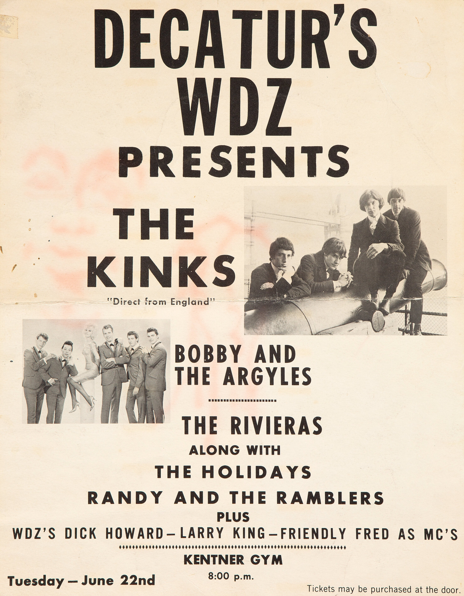

"All Day and All of the Night" was The Kinks doubling down on a sound.
That sound had just made them famous.
Four years later, that same riff put another band in legal trouble.
This is the song The Doors ended up paying for.

Table of Contents
- A Deliberate Follow-Up to Their Breakthrough Hit
- The Real Story Behind the Slashed Amp
- When The Doors Got Sued for Sounding Too Similar
- FAQ
A Deliberate Follow-Up to Their Breakthrough Hit
Ray Davies wrote this song specifically to build on "You Really Got Me."
That earlier single had just topped the UK charts.
The Kinks recorded the follow-up at Pye Studios on September 24, 1964, and released it on October 23.
Ray Davies Called It "the One That Started It"
Davies later said this track, even more than its predecessor, is where the band's harder sound really took hold.
He's pointed out that the guitar tone would fit comfortably on a modern metal or punk record.
Producer Shel Talmy, who had also worked on "You Really Got Me," returned for this session, keeping the same raw approach that had worked the first time.
The Real Story Behind the Slashed Amp
Dave Davies famously created the band's distorted guitar tone by slitting his amp's speaker cone with a razor blade.
The full story behind that moment is more personal than the trick itself.
A Teenage Heartbreak Behind the Sound
Dave has said his teenage girlfriend, Sue, became pregnant while they were still teenagers.
Their parents thought them too young and forced the two of them apart.
He described himself as angry and depressed in the aftermath.
At one point he was fooling around with a razor blade near his small Elpico amplifier.
He turned that frustration on the amp instead.
Slashing the speaker cone created the raw buzz that defined the band's early singles.
When The Doors Got Sued for Sounding Too Similar
The Doors released "Hello, I Love You" in 1968.
Listeners immediately noticed how closely its riff echoed this Kinks single.
The Kinks' representatives pursued the matter formally rather than letting it go.
Doors guitarist Robby Krieger later denied copying Ray Davies.
He said the song's feel came from Cream's "Sunshine of Your Love" instead.
UK courts disagreed with that account.
Royalties from "Hello, I Love You" were ultimately ordered to go to Davies.
The settlement stayed fairly quiet at the time and never seriously damaged The Doors' reputation with fans.
The song reached number two in the UK.
It climbed to number seven on the Billboard Hot 100 in the US.
Its influence reaches well beyond that chart placement.
Acts from Black Sabbath to The Clash have cited it as a direct blueprint for their own guitar sound.
The Who and Thunder have made similar acknowledgments over the years, tracing a straight line from this single to their own early records.
FAQ
Who wrote it?
Ray Davies wrote it as a deliberate follow-up to "You Really Got Me."
The Kinks recorded it at Pye Studios on September 24, 1964.
Why does it sound so much like You Really Got Me?
The band reused the same raw two-chord riff formula on purpose.
That sound had just made them stars, and Ray Davies wanted to build on it fast.
Did The Kinks sue The Doors over it?
Yes.
The Kinks argued the 1968 Doors song "Hello, I Love You" copied this riff.
UK courts ultimately ruled that royalties should go to Ray Davies.
How did it perform on the charts?
It reached number two in the UK and number seven on the Billboard Hot 100 in the US.
Both numbers landed close to its predecessor's chart run.
This single is where The Kinks' raw guitar sound became a formula, not a one-off.
It's a defining record of the harder edge inside the British Invasion & Beat Music era.
Back to the 1960smusic.net homepage to explore the rest of the decade, starting here with "All Day and All of the Night."